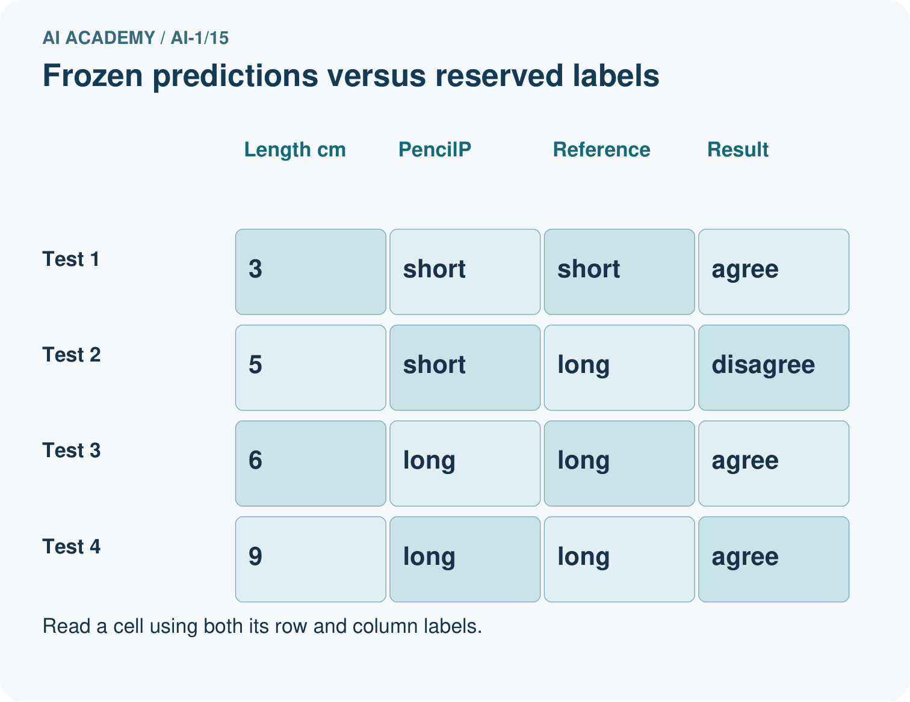
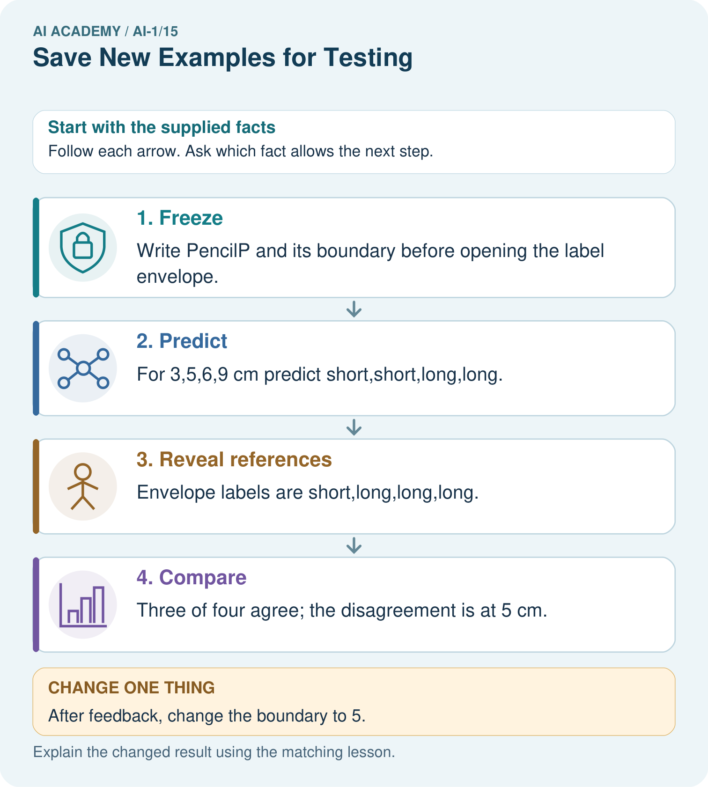

AI Academy · Level 1 · Grade 6 · Week 15 · Teacher guide
Save New Examples for Testing
Learn to understand, design, build, test and explain AI systems responsibly.
Project: Helpful Classroom Sorter
Teacher guide · 1 of 6
Save New Examples for Testing
Teach the learning cycle
Primary target: Separate examples used to choose a model from examples reserved for its final evaluation
| Session | Sequence and minutes | Resources |
|---|---|---|
| Session 1 · Understand · 45 min | 0–7: recall and prerequisite; 7–15: inspect the concrete case and predict; 15–30: teacher models the worked trace; 30–40: learners explain a step using the text and visual; 40–45: check the core idea. | Sections 1–6; record the brief recall in the workbook. |
| Session 2 · Practise · 45 min | 0–5: retrieve the procedure; 5–15: W2 completion practice; 15–23: explain and check with a partner; 23–30: each learner answers the misconception check; 30–40: targeted reteaching or a harder variation; 40–45: prepare the investigation. | Sections 7–10; use the matching workbook W2 and misconception check. |
| Session 3 · Investigate and transfer · 45 min | 0–5: retrieve the decision rule; 5–20: investigate or trace; 20–30: start the independent case; 30–38: connect the project; 38–43: act on feedback; 43–45: plan the return check. | Sections 9 and 11–14. Give extra time to finish the full task set; use Section 15 when the week includes a coding lab. |
This is a starting allocation of 135 minutes, not a validated duration. Preserve all named topics. Schedule extra time for connected examples, the full investigation, independent cases and project building. Repeated copies of a case share one recorded attempt; they are not new evidence.
Retrieval answer guidance
Build a Human Classifier
Without opening the old lesson, explain one key idea from Build a Human Classifier. Give an example and a mistake that the idea helps you avoid.
Look for: Construct a classifier with a stated input format, selected rule and recorded output
Reference example, not the only acceptable wording: Require a present height, unit cm, a whole number and range 1 through 10 inclusive. For example, 7 cm is accepted; blank is missing, 60 mm has the wrong unit and 11 cm is outside the range. Fractional values such as 4.5 cm also fail. The contract defines accepted inputs; it does not list only the fitting records or establish prediction correctness.
Debug the Cause
Without opening the old lesson, explain one key idea from Debug the Cause. Give an example and a mistake that the idea helps you avoid.
Look for: Compare expected and observed traces to locate the first difference
Reference example, not the only acceptable wording: Expected trace: 3, 5, 10, 9. First difference is the doubling checkpoint: 10 expected versus 8 observed. The later 8 minus 1 equals 7, so the observed subtraction is consistent with its input. Investigate the earlier step before claiming another fault.
Algorithms as Recipes
Without opening the old lesson, explain one key idea from Algorithms as Recipes. Give an example and a mistake that the idea helps you avoid.
Look for: Trace an ordered algorithm using the current value after every instruction
Reference example, not the only acceptable wording: The trace is 3, 7, 14, 9. The doubling step uses 7, the current value after adding 4 to 3. It must not double the initial 3. Accept a table, arrows or clearly labelled sentences that preserve the order.
Use the student module and workbook section with this exact week title. The worked case, independent question and answers below form one aligned lesson sequence.
What the learner must demonstrate
Eight cards are used to invent a rule. Four sealed cards are then opened; the team changes its rule after seeing errors. Can those four cards still be called an untouched final test? Plan what to do next.
Concept to explain
A fair test uses examples not used to create the decision process.
| Term | Meaning |
|---|---|
| training set | examples used to create or adjust a process |
| test set | untouched examples used for final checking |
| holdout | data deliberately kept separate |
| data leakage | test information influences design |
Prepare the class
Use the supplied scenario, student illustrations and blank paper. For numeric work, offer counters or a calculator after learners show the setup. Fictional records are supplied; personal data and paid accounts are unnecessary.
Allow 80 minutes: recall 8; explanation 12; worked demonstration 15; guided practice 20; independent assessment 15; project and reflection 10. Extend the lab into a second session when needed.
Preparation for the connected explanation
Make the order of evidence visible. The lesson table is a retrospective worked example, not an unseen student test. W4 is a separate staged exercise: do not reveal its labels before predictions are committed. Avoid calling ordinary input validation a validation set here; the focus is development versus a held-out final check.
Readiness answer
Compare the prediction with an appropriate recorded label. If the label helps choose the threshold, that example has participated in fitting or model selection; it is not independent evaluation evidence for the resulting model.
Development and reserved tower cards from the worked example, marked as a completed experiment
RibbonA input cards 5, 7, 9, 11 cm and a covered label sheet: short, short, long, long
Paper for a dated frozen-rule record and separate predictions, labels and outcome columns
End goal for the pictorial case
By the end, I can freeze a model before labels are revealed and report a bounded test result.
This added worked case illustrates the week’s main idea. Retain all original and connected topics; schedule its practice within the teaching cycle.
Teacher guide · 2 of 6
Explain the mechanism
Explain the mechanism
Follow the information instead of imagining magic inside the machine.
INPUT all labeled cards
PROCESS separate training and untouched testing before rule creation
OUTPUT honest performance evidence on new cards
CORE IDEA A fair test uses examples not used to create the decision process.
UNDER THE HOOD Evaluation on training data is optimistically biased. A holdout test set estimates behavior on unseen examples only if it remains untouched during design. Repeatedly tuning to test results leaks information and turns the test into training.
Draw a fresh example with all three stages:
Every step connects a claim to observable evidence.
CASE If a sorter sees every mystery card while its rule is being created, later success on those same cards does not show transfer.
STEP 1 — OBSERVE all labeled cards
STEP 2 — TRACE separate training and untouched testing before rule creation
STEP 3 — CONCLUDE honest performance evidence on new cards
MODEL REASONING Randomly or deliberately reserve representative cards first. Create the decision process using only the learning pile. Open the test pile once for evidence, record every result, and do not call the revised process tested until a new holdout exists.
DO NOT OVERCLAIM A test set stops being independent when its answers guide revisions.
What new evidence could change this answer?
Concrete teaching case
Cards A–F are used for practice. G and H remain sealed.
Which can provide a fresh test, and under what condition?
Exact explanation to model
G and H, only if neither influenced teaching or revision. Familiar cases do not establish unseen performance. Keep final test answers separate.
Explain the added worked example
A rule chosen to fit examples may work differently on new cases. To investigate that difference, reserve a set of examples before development. Use the development examples to choose the model. Keep the final test examples separate until the model is fixed, then evaluate that recorded model.
In this paper activity, a teacher keeps the reserved examples in an envelope. Record the input contract, feature, category rule and model version before opening it. Once the input values are revealed, predict using the frozen model before revealing their comparison labels. This prevents copying the labels into the predictions.
The worked example below describes a completed experiment, so its test labels are visible for discussion. It is not an unseen test for you. In the workbook experiment, the teacher will supply a separate set of comparison labels after you have saved your predictions. All data are imaginary classroom records.
In the completed experiment, development towers at heights 2, 4, 6 and 8 cm have labels short, short, tall and tall. Candidates predict tall at or above 5 or 6 cm. Both fit all four labels; the stated smaller-threshold tie rule selects 5. The team freezes model TowerA with threshold 5.
The reserved inputs are different records at heights 3, 5, 7 and 9 cm. TowerA accepts whole cm heights from 1 through 10. It predicts short, tall, tall and tall. These predictions are saved before the reserved labels are opened. The comparison below records what happened, including the failure.
Key terms
| Term | Meaning |
|---|---|
| Development examples | Examples available for fitting, comparing or revising a model |
| Held-out test set | Examples reserved from development for evaluating a fixed model |
| Freeze | Record a model and stop changing it for a particular evaluation |
| Test leakage | Information from a reserved test influencing model development |
| Evaluation record | A record of the tested model, predictions, comparison labels and results |
Model the reasoning aloud
Use the complete worked example below before asking learners to complete W2. Reveal a small part, invite a prediction, then explain the deciding step. These teacher notes contain solutions; do not reveal the independent case answer during modelling.
| 3 cm | Short | Short |
|---|---|---|
| 5 cm | Tall | Short |
| 7 cm | Tall | Tall |
| 9 cm | Tall | Tall |
TowerA agrees on three of these four reserved examples and disagrees at 5 cm. That is evidence about this fixed model on this small set. It does not prove a success rate for every future tower. The labels, range of examples and way records were selected also matter.
After seeing the 5 cm label, the team changes the threshold to 6 and names the revision TowerB. TowerB agrees on all four of these now-seen examples. The change may be useful, but those examples have influenced its development. Four agreements on them are not an independent final test result for TowerB. Keep TowerA’s original three-of-four record.
| Thinking move | Teacher prompt |
|---|---|
| Plan | What is given? What is the question? Which procedure fits these facts? |
| Do | Point to each input and intermediate step in the worked trace. Name the rule that allows the next step. |
| Check | Does the output answer the question? Which assumption or limitation prevents a larger claim? |
Use the diagram and verbal explanation together. Ask learners to match a sentence to a specific visual step; do not assign learners fixed visual or auditory learning styles.
A pictorial worked case: Save New Examples for Testing
A fictional envelope exercise evaluates a fixed pencil-length sorter.
The facts we will use
Freeze PencilP: long at least 6 cm; short below 6.
Reserved valid lengths are 3,5,6,9 cm. Teacher envelope labels, revealed only after predictions, are short,long,long,long.


Read the picture one step at a time
Why this result follows
The prediction record must exist before the labels are seen. PencilP scores 3/4=75% agreement on these four selected cases. Moving the boundary after inspecting the envelope makes this a development exercise; the same four cases can no longer serve as untouched final evaluation.
What this example does not establish
Four selected cases cannot establish a reliable accuracy rate for every future pencil or classroom.
Change one thing in the pictured case
Change: After feedback, change the boundary to 5.
Prediction: The revised rule matches all four known labels but needs a different final test.
Reason: These labels influenced the revision, so replaying them is evidence of repair rather than unseen performance.
Ask while showing the picture
Cover the result. Ask learners to name the inputs and predict the next step. Uncover one step, connect the icon to the actual procedure, and explain its evidence. Then change the supplied condition and compare. The picture is a representation; it does not document execution of a real AI model.
Teacher guide · 3 of 6
Demonstrate and guide practice
Demonstrate and guide practice
Board sequence
Write the given facts: Cards A–F are used for practice. G and H remain sealed.
Write the question to explain: Which can provide a fresh test, and under what condition?
Reveal after predictions: G and H, only if neither influenced teaching or revision. Familiar cases do not establish unseen performance. Keep final test answers separate.
Keep for an independent attempt: You teach a sorter using cards A, B and C. You keep D and E unseen. Which cards provide the fairer first test? What changes if you show D during teaching?
Classroom dialogue
Ask: Which facts are given, and which would we have to assume? Learners mark relevant details before discussing answers.
Say: Predict first. Show the rule, information path or calculation that would produce the result. A correct guess is not yet an explanation.
Reveal reasoning one step at a time. Explain why a tempting alternative fails. Write units and denominators for arithmetic, trace conditions for decisions, and identify supporting sources for claims.
In pairs, one learner solves while the other checks evidence; exchange roles. Remove the worked answer before independent assessment.
Model these guided questions
TowerA agreed on three of four original reserved records, failing at 5 cm. TowerB agreed on all four after their labels informed its revision; this is performance on development evidence. Freeze TowerB before evaluating fresh appropriate reserved examples. Shuffling cannot undo prior use. Exit: the team selected using test scores, so it measured a development comparison and still lacks an independent final check of the winner.
Case-specific teaching sequence
| Stage | Teacher action |
|---|---|
| Session 1 start 0 to 7 minutes | Retrieve the difference between accepted input and checked prediction. Ask when a label becomes part of development. |
| 7 to 20 minutes | Trace the three evidence stages in the diagram. Explicitly identify the lesson table as an already completed experiment. |
| 20 to 33 minutes | Compare TowerA predictions and revealed labels. Complete W1 and W2, preserving the original failure when TowerB is introduced. |
| 33 to 45 minutes | Use W3 to show how a score can influence model selection without exposing individual labels. Discuss why shuffling is not a repair. |
| Session 2 start 0 to 8 minutes | Retrieve the frozen-model and saved-prediction requirements. Keep the RibbonA label sheet covered. |
| 8 to 23 minutes | Complete the guided task and plan the two statements for TowerA and TowerB. Describe what fresh evidence would be needed. |
| 23 to 38 minutes | Collect W4 predictions independently before revealing short, short, long, long. Students append results without erasing predictions, then explain the revised threshold. |
| 38 to 45 minutes | Use W5 and the exit to distinguish independence from coverage. Keep original and revised result claims side by side. |
Reduce help deliberately
Completion task: TowerA uses threshold 5 on reserved heights 3, 5, 7 and 9 cm. The labels are short, short, tall and tall. Write its predictions, agreements and disagreement. Then state why TowerB with threshold 6, selected after seeing these labels, cannot claim four independent test successes on these same records.
Teacher check: TowerA predicts short, tall, tall, tall: three agreements and one disagreement at 5. TowerB predicts short, short, tall, tall, matching all four, but the revealed labels influenced its selection. Report its four agreements as a result on examples used in development, preserving TowerA’s original test record.
Start by identifying the given inputs together. Leave the intermediate steps blank. If needed, model one step, then withdraw that help on the next step. Move to a full trace only when the partial trace is understood. For partners, alternate explainer and checker; collect a response from every learner before discussion.
Individual reasoning check
Use the worked case for Keeping final tests unseen. Proposed explanation: “A new file makes old records unseen”. Decide whether this explanation is supported. Point to the step or supplied fact that decides; explain your repair if needed.
Expected correction: Trace whether records or copies already influenced development, regardless of their file names.
Collect explanations, not only yes/no votes. If a misunderstanding is common, re-model the relevant step for the class. If it affects a few learners, give a short targeted group explanation while others solve a more demanding variation.
Pictorial practice question
Does 4/4 on the replay replace the original 3/4 result? Explain.
Reasoned teacher answer
No. Keep 3/4 as the frozen version’s result; record 4/4 separately as a revised-version replay on known cases.
Changed-case reasoning: The revised rule matches all four known labels but needs a different final test. These labels influenced the revision, so replaying them is evidence of repair rather than unseen performance.
Collect each learner’s explanation before discussion. Use the first missing connection between input, deciding step and result to choose support. This question is worked-case practice, not fresh mastery evidence.
Teacher guide · 4 of 6
Run the weekly evidence lab
Run the weekly evidence lab
Predict first, test honestly, and explain what the evidence means.
State your prediction before the result is known.
Complete the task: Split card data into learn and test piles before sorting.
Keep a normal case and an edge case clearly separated.
Record what happened—even when it does not match your prediction.
Explain the result, one limitation, and the next useful test.
INDEPENDENCE After support is removed, repeat the proof with a fresh case.
Make the lab runnable
Use the concrete case as the shared normal case and the independent question as a second case. Each pair creates a boundary or missing-information case and predicts its result before testing. Keep the expected result separate from an observed mistake.
| Record | What to capture |
|---|---|
| Input or evidence | Exact data, instruction or claim |
| Expected result | Answer or safe fallback declared before the run |
| Observed result | Actual result, including errors |
| Explanation | Rule, calculation or evidence explaining the outcome |
| Next test | One justified change and a new prediction |
Diagnose and reteach
CLAIM TO REPAIR A card remains unseen after it has been used for teaching.
For guessing, return to given facts and request a trace. For vocabulary without application, use one example and one non-example. For arithmetic errors, check the setup before the calculation. Finish with a different uncoached case before recording mastery.
Address these additional misconceptions
A new file makes old records unseen: Trace whether records or copies already influenced development, regardless of their file names.
Only labels copied into training can leak: A test score can guide rule selection even when individual labels remain hidden.
Testing means the model can never improve: Improve openly, preserve the original result, and obtain fresh independent evidence for the revision.
A perfect reserved score proves universal correctness: Check sample size, variety, relation to development records and intended use; keep the conclusion within the evidence.
Match the support to the first error
| What the response shows | Next teaching action |
|---|---|
| Missing or misread facts | Read the case aloud, mark supplied versus unknown facts, and let the learner restate it. |
| Wrong procedure | Return to the deciding step in the worked case. Contrast it with the proposed incorrect explanation. |
| Arithmetic or implementation error | Trace intermediate values or lines; preserve the first mismatch and retry that step. |
| Correct result without a reason | Ask for a trace and a changed case before marking independent understanding. |
| An unsupported wider claim | Ask which supplied evidence supports the claim and which further observation would be needed. |
Offer an oral explanation, drawing, enlarged visual or fewer examples when that removes a reading/writing barrier. Keep the same reasoning goal. Stretch secure learners by changing a boundary or assumption and asking them to defend the effect, not simply by assigning more of the same questions.
Teacher guide · 5 of 6
Assess and explain the answers
Assess and explain the answers
Worked case answer
G and H, only if neither influenced teaching or revision. Familiar cases do not establish unseen performance. Keep final test answers separate.
Independent question
You teach a sorter using cards A, B and C. You keep D and E unseen. Which cards provide the fairer first test? What changes if you show D during teaching?
Expected independent answer
D and E provide new evidence. If D is shown during teaching, it is no longer an unseen test example; keep E or obtain another fresh card for testing.
What counts as evidence
| Criterion | 0 points | 1 point | 2 points |
|---|---|---|---|
| Result | Incorrect or absent | Partly correct | Correct with necessary conditions |
| Reasoning | No supporting trace | Some steps | Clear mechanism, calculation or source support |
| Limit | Overclaims certainty | Vague limitation | Relevant uncertainty or missing fact |
| Transfer | Copies without adapting | Adapts with prompts | Solves a changed case independently |
Use 6/8 as a classroom checkpoint, with 2 required for both Result and Reasoning. This is a proposed teaching rule, not a validated certification threshold. Do not count a coached answer as independent mastery; correct unsafe or unsupported claims regardless of total.
Feedback
Ask the learner to find the evidence that challenges this claim: “A card remains unseen after it has been used for teaching.” Keep the first attempt and an uncoached retry separate.
Original transfer answer
No. They became development evidence when they influenced revision. Reserve new independently labelled cases for final evaluation. If none are available, disclose that limitation and report results as development results, not unseen performance.
Explanations for the additional workbook examples
W1 Assign the evidence its role
For each event, state whether examples are being used for development or independent evaluation of a fixed model: comparing candidates on fitting labels; scoring a frozen model on previously reserved examples once; changing a threshold after reading a test score. Explain your last choice.
Comparing candidates is development. Scoring a frozen model on previously reserved examples is evaluation, provided they did not influence its development. Changing a threshold after reading the test score uses that test information for development of the revision; the same set is no longer independent of that revision.
W2 Preserve the original result
TowerA uses threshold 5 on reserved heights 3, 5, 7 and 9 cm. The labels are short, short, tall and tall. Write its predictions, agreements and disagreement. Then state why TowerB with threshold 6, selected after seeing these labels, cannot claim four independent test successes on these same records.
TowerA predicts short, tall, tall, tall: three agreements and one disagreement at 5. TowerB predicts short, short, tall, tall, matching all four, but the revealed labels influenced its selection. Report its four agreements as a result on examples used in development, preserving TowerA’s original test record.
W3 Detect a less visible leak
A team leaves reserved labels out of its fitting table but tries six rules and reads a test score for each. It chooses the highest-scoring rule. Explain how information still reached model selection. Would renaming or reordering the same test records repair the problem?
The scores depend on the reserved labels and guide the choice among rules, so test information influences selection indirectly. Omitting the labels from a fitting table is insufficient. Renaming or reordering records does not remove that information; reserve new appropriate examples for an independent final check.
W4 Run a separate ribbon experiment
Before receiving any test labels, freeze RibbonA: whole cm lengths 1 through 12, long at least 6 cm and short otherwise. Save predictions for 5, 7, 9 and 11 cm. Ask your teacher to reveal the reserved labels, then record agreements, disagreements and a limited result statement. If you later choose threshold 8 after seeing these labels, explain how you must describe its result on the same records.
Saved predictions are short, long, long, long. Reveal labels only after predictions are saved: short, short, long, long. RibbonA has three agreements and one disagreement at 7 on four reserved records. Threshold 8 then gives short, short, long, long, but it was chosen after feedback. Its four agreements are on now-seen development examples, not a new independent test. Do not alter the saved RibbonA predictions.
W5 Audit a proposed final set
A class reserves ten copies of one easy development example in a new file. The model agrees with all ten labels. Explain two reasons this gives weak evidence about new cases, and propose a better final evaluation plan without promising perfect future performance.
Copies repeat a case already used in development and provide almost no variety; a new file does not make them new evidence. Reserve distinct relevant cases before model choices, keep related copies together, freeze the model, save predictions, reveal labels and report every outcome. Include cases relevant to intended use and state that a finite test cannot guarantee all future results.
Assess independent transfer
Selected case: Before receiving any test labels, freeze RibbonA: whole cm lengths 1 through 12, long at least 6 cm and short otherwise. Save predictions for 5, 7, 9 and 11 cm. Ask your teacher to reveal the reserved labels, then record agreements, disagreements and a limited result statement. If you later choose threshold 8 after seeing these labels, explain how you must describe its result on the same records.
Selected case answer
Saved predictions are short, long, long, long. Reveal labels only after predictions are saved: short, short, long, long. RibbonA has three agreements and one disagreement at 7 on four reserved records. Threshold 8 then gives short, short, long, long, but it was chosen after feedback. Its four agreements are on now-seen development examples, not a new independent test. Do not alter the saved RibbonA predictions.
| Dimension | Evidence required |
|---|---|
| Explanation | Names the applicable idea or procedure and ties it to the supplied facts. |
| Trace and result | Preserves the given inputs and shows the relevant intermediate steps; distinguishes a prediction from an observed execution. |
| Limits | States the assumptions, missing evidence or conditions under which the result would change. |
Record each dimension as not yet, with support, or independent. Accept a valid alternative procedure with a defensible trace. Do not penalise an honestly recorded model failure if the learner correctly explains its evidence and limits.
Feedback that the learner uses
Name the earliest unsupported step and give one action to repair it. Have the learner make that repair now and explain why. Then assess the relevant skill on a fresh, fully specified case. Confirm it was not previously practised with feedback; solve and check the new case before assigning it. A follow-up design prompt is a starting brief, not automatically an equivalent test.
Teacher guide · 6 of 6
Connect and extend learning
Connect and extend learning
Helpful Classroom Sorter
Create separate learn and test envelopes for the Classroom Sorter and label who may open each.
Keep the decision, input, result, explanation and remaining limitation in the project evidence record. Retrieve this record next week rather than restarting the project.
Support and stretch
Use physical cards, spoken explanations and a three-stage drawing. Read aloud without giving the answer. Stretch: compare two mechanisms with the same visible output and explain what evidence distinguishes them.
Exit reflection
Ask for one decision the learner can now justify and one situation requiring more evidence or human review. Confidence ratings are separate from correct independent performance.
Bridge to the next week
Next: Week 16: Boundaries and 'Not Sure'. Retrieve today’s evidence and identify what carries forward and what is new.
Support and fresh reassessment
Use two envelopes and a timeline with a clear freeze point. Read the steps aloud, preserving the learner’s original predictions. Extension: explain why selecting the best of many test scores may give a flattering result even without deliberate cheating.
W4 is secure with saved predictions, three agreements, the 7 cm failure, a limited claim and a correct account of post-test revision. If labels were seen early, record the exercise as coached practice. For an uncoached retry freeze BandA at long at least 4, use inputs 2, 4, 6, 8, then reveal short, short, long, long: three agreements, failure at 4.
Week 16 develops explicit uncertainty and review paths when available evidence does not justify a confident category or action.
Plan the delayed return
Suggested return points in this level: ai-1/16, ai-1/18, ai-1/21. Use actual classroom dates, adjusting for holidays and gaps. One, three and six teaching weeks are scheduling choices, not a claimed optimal spacing.
At a delayed check, ask for the idea from memory and a changed application. Compare with the earlier independent response and record support used. For a new level, revisit the previous capstone before checking the new prerequisites.
| Record | Teacher evidence |
|---|---|
| Learner code and date | |
| Concept and case used; prior exposure | |
| Explanation / trace / limits | |
| Support and first repair | |
| Changed case and delayed outcome | |
| Next teaching action |
Use the evidence to choose reteaching or the next step. A completed page, confidence rating or attractive project does not by itself demonstrate understanding.
Project evidence from this case
Maintain dated sorter versions and separate development examples from reserved project-evaluation cases.